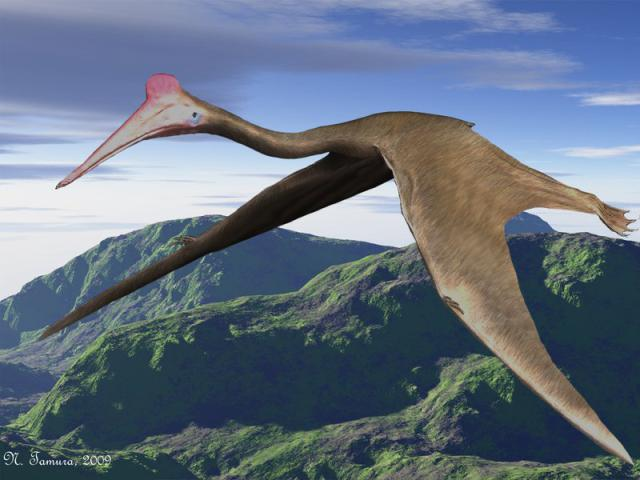
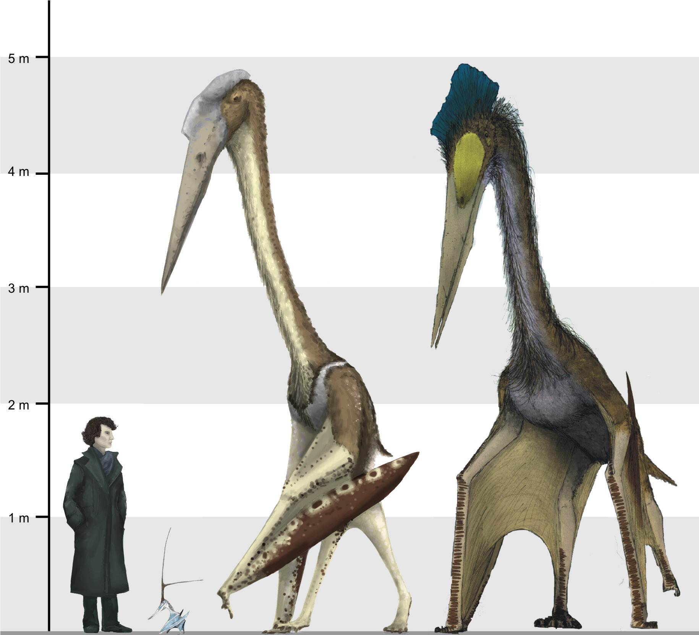
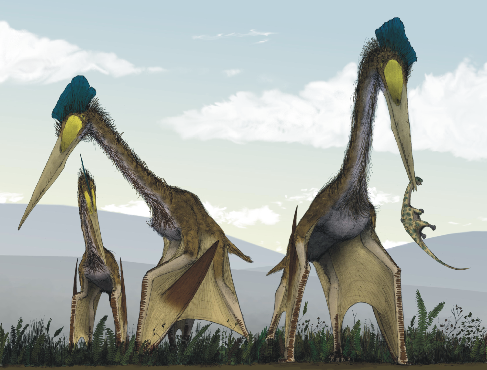
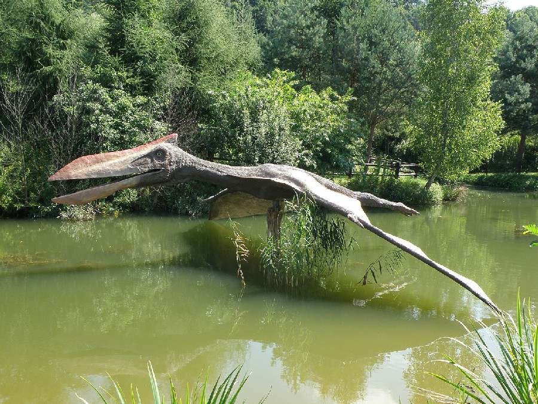

Introduction
The Quetzalcoatlus was an impressive creature that lived during the late Cretaceous period. It is the largest known organism to have ever taken flight. It was a member of the Azhdarchidae, a family of advanced toothless pterosaurs with unusually long, stiffened necks. Even though it is not a dinosaur, it would be amazing to see this magnificent beast glide through the sky and swoop down to tackle an unsuspecting prey.
Species Information
| Scientific Classification | Type |
|---|---|
| Kingdom | Animalia |
| Phylum | Chordata |
| Class | Sauropsida |
| Family | Azhdarchidae |
| Genus | Quetzalcoatlus |
| Species | Quetzalcoatlus northropi |
Description
Quetzalcoatlus northropi is the largest known animal to have ever been able to fly. When it was first discovered, scientists estimated that the fossil came from a pterosaur with a wingspan of up to 45 feet (13.7m), choosing the middle between three extrapolations from the proportions of other pterosaurs that gave an estimate of 40, 50 and 70 feet respectively. in 1981, futher study showed that this estimate was too large, and lowered the estimated wingspan to 50 feet (15m). More recently, the wingspan estimated has been reduced yet again, this time to 36 feet (10.9m).
Habits
The feeding habits of Quetzalcoatlus are controversial. Originally, it was assumed to catch fish and crustaceans, like most other pterosaurs, until it was realized that it lived 248 miles from any shore during the Cretaceous period, and that there was no evidence for an inland water source for miles around. Lawson, in 1975, rejected the fish eating hypothesis and said that it instead was a scavenger, like the marabou stork, feeding on the carcasses of sauropods and other dead dinosaurs. Studies have shown that Quetzalcoatlus could take off under its own power, but once aloft it may have spent much of its time soaring. To test the flight on Quetzalcoatlus, a program sponsored by Johnson Wax involved the construction of a model flying machine. It was about half scale (20 ft), the size of Quetzalcoatlus sp., and had a simple computer functioning as an autopilot. The experiment worked and the model flew through the skies with a combination of soaring and wing flapping. The model is now resting in the Smithsonian Institution Air and Space Museum.
Environment
During the Cretaceous period, Texas' environment was that of a vast swamp. This swamp extended far into North America at this time, following the Western Interior Seaway up into canada and beyond. Fossils of related pterosaurs can be found in other areas of this prehistoric swamp, in Alberta, Canada.
